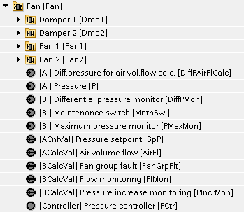
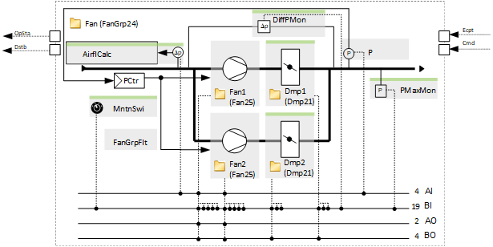
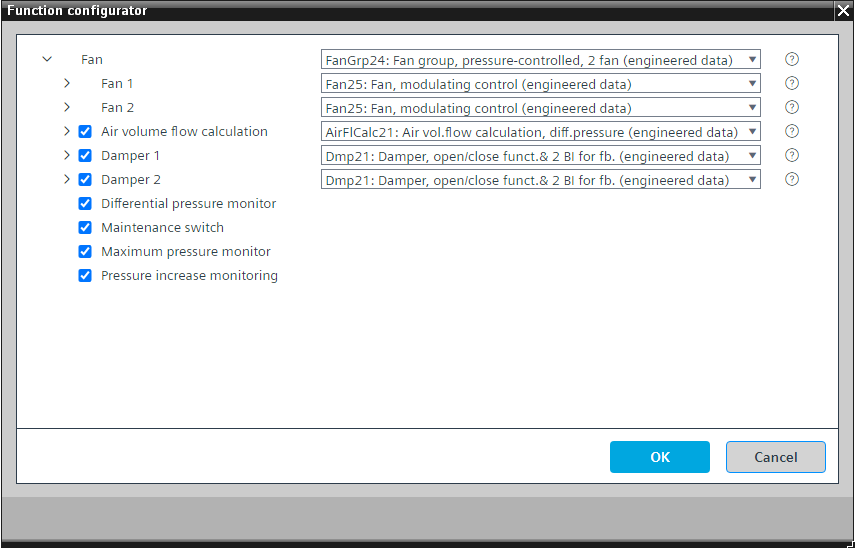

[FanGrp24] 风扇组，压力控制，2 个风扇
Program block, name / node subtype: [FanGrp24] Fan group, pressure-controlled, 2 fan
Library hierarchy: Ventilation and air conditioning equipment
Family: Fan
项目树 | 图表 |
|---|---|
|
 |  |
Configurator


程序块存储在没有 I/Os. 的库中 使用auto-create and auto-connect函数创建 I/Os 和 /or 将它们连接到接口块，例如 R_A、CMD_B。或者，从包含库中预定义 I/Os 的文件夹中取出 I/Os，并从工厂中取出 /or，并将它们连接到接口块。
控制两个变速风扇并执行压力控制。
风扇预设为 25 型。我们不建议将其更改为替代品。
FanGrp24 可以通过两种方式使用：
- If, e.g., Fan 1 has a problem, Fan 2 also stops. The whole fan group reports that there is a fault, and the air handling unit stops. In this case, set "Minimum number of fans in operation" to "2". This is the recommended behavior if there is no mechanical check damper or an optional damper controlled by the program.
- If, e.g., Fan 1 has a problem, Fan 2 continues to operate. Only if both fans have a problem, the whole fan group reports that there is a fault, and the air handling unit stops. In this case, set "Minimum number of fans in operation" to "1". In this case, there must be an equipment part that closes the stopped fan (mechanical check damper or optional damper controlled by the program).
如果其中一台风扇正在运行并手动停止（优先级 8），风门不会自动关闭，必须手动关闭（优先级 8）。
压力测量值具有过滤功能。然而，其时间常数设置为较短的值，例如1秒。其原因是，已经存在针对预定义的 IO 的 COV 设置的预过滤，例如 5 Pa，此外，PID 控制器具有预设的中性区，例如 6 Pa。
使用控制器的 BACnet 对象的属性“控制器输出最小值”预设最小速度，例如 10 %。速度可以调节。
在排烟的情况下，风扇速度由每个风扇的程序中的参数定义，并且与压力控制无关。程序中的另一个参数定义了排烟过程中发生警报时风扇组的反应，并以风扇组本身发出的警报不会停止的方式进行预设。维护开关是唯一的例外。
以下选项生成的所有警报都会停止风扇组，以高优先级（优先级 5）阻止其输出并关闭工厂。
该程序块具有以下可选功能：
Option: Air volume flow calculation
测量气流，如果风扇必须运行时缺少气流 (AirFlCalc21)，则可以生成警报（可选）。
Options "Damper 1" and "Damper 2"
阻止气流通过风扇 (Dmp21) 的关闭风门。两个选项是一体的。同时选择或取消选择这两个选项。
Option: Differential pressure monitor (1xBI)
从风扇组上的压差监视器读取信号，如果风扇组应该运行时缺少压差，则会生成警报。
Option: Maintenance switch (1xBI)
读取维护开关的信号并产生警报。如果处于活动状态，则风扇组的输出将以非常高的优先级（优先级 2）停止。
如果风扇组（此选件）有一个维护开关，我们建议删除两个风扇上的可选维护开关。如果每个风扇都有自己的维护开关，请禁用此选项。
Option: Maximum pressure monitor (1xBI)
从最大压力监视器读取信号并生成警报。
这是安装在空气处理器附近的压差开关。它可以防止损坏空气管道。
Option: Pressure increase monitoring
从用于控制的压力传感器读取值，如果风扇组必须运行时压差没有增加，则生成警报。
姓名 | 描述 | 类型 | 报警/通知类 | 趋势/类型 | |
|---|---|---|---|---|---|
|
FanGrpFlt | Fan group fault | BCalcVal: Binary calculated value | 是的，4 | No | |
Fan1 | Fan 1 | N/A | N/A | ||
Fan2 | Fan 2 | N/A | N/A | ||
P | Pressure | AI：模拟输入 | 是的，4 | 是的，2 | |
SpP | Pressure setpoint | ACnfVal: Analog configuration value | No | 是的，4 | |
PCtr | Pressure controller | Ctr: Controller | N/A | N/A | |
姓名 | 描述 | 类型 | 报警/通知类 | 趋势/类型 | |
|---|---|---|---|---|---|
|
Dmp1 | Damper 1 | N/A | N/A | ||
Dmp2 | Damper 2 | N/A | N/A | ||
MntnSwi | Maintenance switch | BI：二进制输入 | 是的，5 | No | |
DiffPMon | Differential pressure monitor | BI：二进制输入 | 是的，4 | No | |
PIncrMon | Pressure increase monitoring | BCalcVal: Binary calculated value | 是的，4 | No | |
AirFlCalc | Air volume flow calculation | [AirFlCalc21] Air volume flow calculation, as a function of differential pressure | N/A | N/A | |
PMaxMon | Maximum pressure monitor | BI：二进制输入 | 是的，4 | No | |
如果在定义的时间内没有增加压力，则会生成监控事件（如果此可选元素可用）。